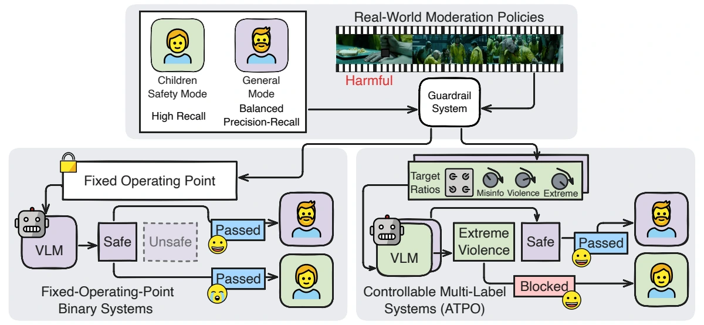
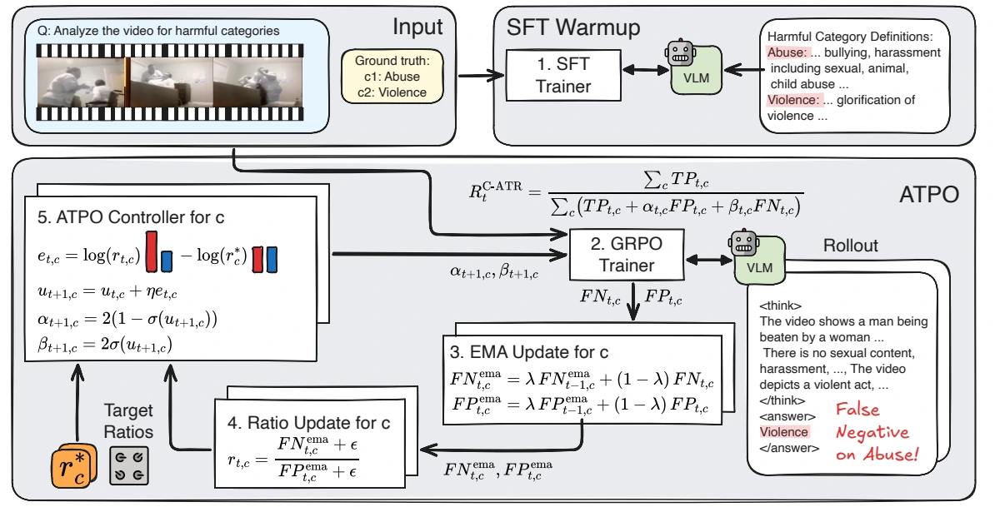
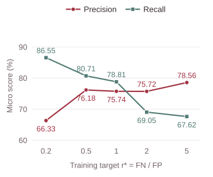
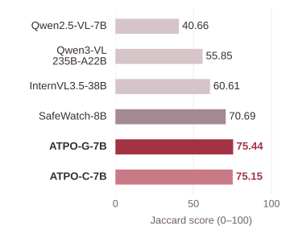
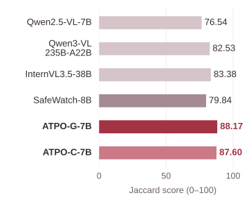

C4 · Misinformation
Prioritize precision
Target FN/FP: 1 → 5
| Metric | Target 1 | Target 5 |
|---|---|---|
| Precision | 55.28 | 70.41 |
| Recall | 66.67 | 67.65 |
ATPO
NeurIPS 2026
A video can contain several types of harmful content at once. ATPO trains models to detect these overlapping categories while steering the balance between missed labels and false alarms.

The rapid growth of video-based social media has increased users’ exposure to harmful content, creating a need for reliable automated video safety detection. Although recent Vision-Language Models (VLMs) show strong video understanding capabilities, existing harmful video detection systems face two key limitations: they typically reduce safety detection to binary classification, overlooking the inherently multi-label nature of unsafe videos, and they rely on static training objectives that do not support controllable precision-recall trade-offs, though the desired operating point may vary across moderation pipelines and unsafe categories. To address these gaps, we propose Adaptive Tversky Policy Optimization (ATPO), a reinforcement learning framework for Multi-label Video Safety Detection (Multi-VSD). ATPO introduces the Adaptive Tversky Reward (ATR), which dynamically adjusts false-positive and false-negative penalties during training to enable controllable precision–recall trade-offs. Experiments on SafeWatch-Bench and XD-Violence show that ATPO substantially improves multi-label performance, increasing the Jaccard Index from 40.66 to 75.44 on SafeWatch-Bench-Real. Moreover, ATR enables reliable steering of the precision–recall operating point, supporting deployment scenarios with heterogeneous policy requirements.
The method
Adaptive Tversky Policy Optimization combines multi-label supervision with reinforcement learning. Its reward adapts to the model’s observed false positives and false negatives during training.

Supervised fine-tuning warms up the VLM using videos and their ground-truth label sets.
GRPO samples predictions. Moving averages track false-positive and false-negative counts.
The controller compares the observed FN/FP ratio with its target and updates the Tversky penalties.
One controller aggregates errors across categories and sets a shared trade-off.
Separate controllers let different categories prioritize different types of error.
Controllability
A smaller target FN/FP ratio favors recall: missing harmful content is penalized more strongly. A larger target favors precision: unnecessary flags receive greater emphasis.
Control happens during training. Changing a target means training and evaluating a model configuration. It is not an inference-time adjustment to a fixed checkpoint, and the achieved error ratio need not equal the target.
Across five G-ATR training targets, recall falls from 86.55 to 67.62, while the precision-to-recall ratio rises from 0.77 to 1.16. The observed FN/FP ratio also increases monotonically.

G-ATR uses target ratio r*; STR uses fixed penalty ratio α/β. These are different training parameters. Precision and recall are reported on a 0–100 scale.
| Method | Training setting | Precision | Recall | P/R | FN/FP |
|---|---|---|---|---|---|
| G-ATR | r* = 0.2 | 66.33 | 86.55 | 0.77 | 0.31 |
| G-ATR | r* = 0.5 | 76.18 | 80.71 | 0.94 | 0.76 |
| G-ATR | r* = 1 | 75.74 | 78.81 | 0.96 | 0.84 |
| G-ATR | r* = 2 | 75.72 | 69.05 | 1.10 | 1.40 |
| G-ATR | r* = 5 | 78.56 | 67.62 | 1.16 | 1.75 |
| STR | α/β = 1/5 | 81.24 | 73.21 | 1.11 | 1.58 |
| STR | α/β = 1/2 | 79.11 | 69.88 | 1.13 | 1.63 |
| STR | α/β = 1/1 | 71.93 | 72.62 | 0.99 | 0.97 |
| STR | α/β = 2/1 | 75.03 | 71.55 | 1.05 | 1.20 |
| STR | α/β = 5/1 | 73.48 | 77.50 | 0.95 | 0.80 |
C-ATR can steer misinformation toward higher precision and the Extreme category toward higher recall in the same trained model. The two configurations below use targets (1, 1) and (5, 0.2) for these categories.
C4 · Misinformation
Target FN/FP: 1 → 5
| Metric | Target 1 | Target 5 |
|---|---|---|
| Precision | 55.28 | 70.41 |
| Recall | 66.67 | 67.65 |
C6 · Extreme
Target FN/FP: 1 → 0.2
| Metric | Target 1 | Target 0.2 |
|---|---|---|
| Precision | 80.31 | 31.77 |
| Recall | 79.07 | 94.57 |
Higher recall can come with more false positives, as the Extreme precision decrease shows. Choose checkpoints using held-out data representative of the intended application and check both precision and recall.
Main results
ATPO improves fine-grained video safety detection on SafeWatch-Bench-Real and XD-Violence. The charts show selected models from Table 1, measured by Jaccard Index on a 0–100 scale.
Jaccard on SafeWatch-Bench-Real
Qwen2.5-VL-7B zero-shot → ATPO-G-7BOver static-reward GRPO
70.09 → 75.44 Jaccard on SafeWatch-Bench-Real

Table 1 compares zero-shot general-purpose VLMs, the specialized SafeWatch-8B guardrail, and ATPO models based on Qwen2.5-VL-7B and trained on each benchmark. The two ATPO benchmark results come from separate in-domain training runs. ATPO uses 11,036 SafeWatch training videos and 3,520 XD-Violence training videos; SafeWatch-8B uses full videos and clips from SafeWatch-Bench.
Jaccard measures predicted/ground-truth label overlap. Micro F1 pools errors across categories; Macro F1 averages category scores. Binary F1 collapses all unsafe categories into one class. All metrics use a 0–100 scale.
| Model | Jaccard | Micro F1 | Macro F1 | Binary F1 |
|---|---|---|---|---|
| Qwen2.5-VL-7B | 40.66 | 42.17 | 28.74 | 65.94 |
| Qwen3-VL-235B-A22B | 55.85 | 62.10 | 56.83 | 80.29 |
| InternVL3.5-38B | 60.61 | 64.05 | 53.55 | 85.80 |
| SafeWatch-8B | 70.69 | 73.15 | 71.37 | 89.04 |
| ATPO-G-7B | 75.44 | 77.25 | 76.10 | 94.82 |
| ATPO-C-7B | 75.15 | 77.42 | 76.61 | 95.25 |
| Model | Jaccard | Micro F1 | Macro F1 | Binary F1 |
|---|---|---|---|---|
| Qwen2.5-VL-7B | 76.54 | 72.29 | 62.78 | 90.21 |
| Qwen3-VL-235B-A22B | 82.53 | 78.03 | 72.29 | 95.36 |
| InternVL3.5-38B | 83.38 | 79.59 | 70.87 | 93.59 |
| SafeWatch-8B | 79.84 | 77.19 | 69.65 | 86.80 |
| ATPO-G-7B | 88.17 | 85.24 | 71.95 | 96.69 |
| ATPO-C-7B | 87.60 | 84.51 | 71.24 | 95.59 |
Starting from the same one-epoch SFT checkpoint, ATPO-G improves over GRPO with Static Tversky Reward on both real and AI-generated videos.
| Training method | Real | GenAI |
|---|---|---|
| GRPO · Static Tversky Reward | 70.09 | 69.12 |
| ATPO-G · Adaptive Tversky Reward | 75.44 | 74.29 |
| Improvement (points) | +5.35 | +5.17 |
Video demos
Explore five videos: what adaptive rewards detect, the trade-off in higher recall, and a focus on individual safety categories.
Each comparison uses recorded outputs from separately trained models. Videos stay covered until you choose to reveal them; playback is silent.
Compare a static reward with ATPO’s adaptive reward on two different safety challenges.
Detecting overlapping harms
Video hidden
Contains a robbery and threats of violence.
Ground truth
Both models identify Illegal. ATPO also identifies Violence, recovering both annotated labels.
Labels from SafeWatch-Bench-Real. Responses are excerpts from recorded model outputs.
Static reward
Predicted labels
Missed label: Violence
C3 (Threats, Violence & Harm): There is no violence or harm in the video.
C5 (Illegal/Regulated Activities): The video shows a robbery, which is an illegal activity.
Adaptive reward
Predicted labels
Matches all ground-truth labels
C3: Threats, Violence & Harm - The video shows a robbery in progress, which involves violence and the threat of harm to the employees and customers.
C5: Illegal/Regulated Activities - The video shows a robbery, which is an illegal activity.
From a missed harm to a detected label
Video hidden
Contains animal abuse involving a kitten.
Ground truth
GRPO describes a cat playing and predicts no unsafe labels. ATPO identifies animal abuse, matching the benchmark annotation.
Labels from SafeWatch-Bench-Real. Responses are excerpts from recorded model outputs.
Static reward
Predicted labels
Missed label: Abuse
C1: Sexual Content - The video shows a cat playing with a toy, which is not related to sexual content.
C2: Harassment & Bullying - The video does not show any harassment or bullying.
Adaptive reward
Predicted labels
Matches all ground-truth labels
C2: Harassment & Bullying - The video shows a cat being hit and kicked by a person, which is a form of animal abuse and harassment.
GRPO uses a static Tversky reward. ATPO uses a global adaptive reward, with the checkpoint used for the paper’s qualitative examples.
Higher recall can recover missed harms, while also producing extra flags. These two examples show both outcomes.
Benefit of higher recall
Video hidden
Contains physical aggression and threatening gestures.
Ground truth
Both models predict Extreme. The higher-recall model also detects Abuse, recovering the full set of annotated labels.
Labels from SafeWatch-Bench-Real. Responses are excerpts from recorded model outputs.
Global control
Predicted labels
Missed label: Abuse
This video contains content that appears to be promoting hate speech and inciting violence, which falls under C6 (Hateful Content & Extremism).
Global control
Predicted labels
Matches all ground-truth labels
The first part of the video shows a person being physically aggressive towards another person, which is a form of harassment.
Cost of higher recall
Video hidden
Contains a physical fight.
Ground truth
Both models detect Violence. The higher-recall model also predicts Extreme, an extra label relative to the benchmark annotation.
Labels from SafeWatch-Bench-Real. Responses are excerpts from recorded model outputs.
Global control
Predicted labels
Matches all ground-truth labels
The text "Love this town 😎😎" suggests a positive attitude towards the violent act, which could be considered harmful content.
Therefore, the most relevant category for this video is C3: Threats, Violence & Harm.
Global control
Predicted labels
Extra label: Extreme
This video depicts a physical altercation between two individuals on the ground.
The text overlay "Love this town 😎😎" suggests a celebratory or approving tone towards the violence.
Both models use the global adaptive reward. Balanced uses a global training target of 1; Higher recall uses 0.2. These are separate trained models.
A model can be trained to prioritize recall for a particular category. Here, the focus is Extreme.
Recall for Extreme
Video hidden
Contains a physical fight.
Ground truth
Both models detect Violence. The category-focused model also predicts Extreme, matching both benchmark labels. Its response describes the fight as potentially glorifying violence.
Labels from SafeWatch-Bench-Real. Responses are excerpts from recorded model outputs.
Category control
Predicted labels
Missed label: Extreme
However, the presence of a fight scene suggests that there is a high likelihood of violence and harm being depicted. Therefore, the most relevant category is C3: Threats, Violence & Harm.
More sensitive to Extreme
Predicted labels
Matches all ground-truth labels
C6: Hateful Content & Extremism - The video depicts a fight scene, which can be considered as a form of glorifying violence and aggression, which is a hateful content.
Both models use category-specific adaptive rewards. Balanced uses a target of 1 for every category. Category focus uses 0.2 for Extreme, 5 for Misinformation, and 1 for the other categories.
These selected examples illustrate model behavior. Correct, missed, and extra labels are measured against the benchmark annotations; see the results above for aggregate performance.
Paper & resources
@inproceedings{yang2026controllable,
title={Controllable Multi-label Video Safety Detection via Adaptive Tversky Policy Optimization},
author={Guangyu Yang and Jingbiao Mei and Mingsheng Sun and Jinghong Chen and Yingtong Bu and Pengda Qin and Da Chen and Bill Byrne},
booktitle={The Fortieth Annual Conference on Neural Information Processing Systems},
year={2026},
url={https://arxiv.org/abs/2610.02019}
}